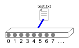

Socket通信を勉強する。
前提
- プログラムはMac(Mojave)で動かす。
- ネットワークに関する知識はほんの少しある。
- 使うプログラミング言語はC++だが、ここではbetter Cの意味でしか用いない。
(寄り道) ファイル入出力
Socket通信を学んでいると、ファイルディスクリプタが出てきたので、まずはそこから勉強する。
関数定義についてはJM Projectから引用したものを用いる。これはLinuxマニュアルと同じらしいので、恐らくmanコマンドで出力されるものと同じである(ただし英語であるが)。
ファイルディスクリプタとは
ファイルディスクリプタとは、ファイルと結びつけられた単なる整数値である。データの読み書きを行う場合は、この整数値を指定してアクセスする。例えばファイルtest.txtのファイルディスクリプタが4だった場合、読み書きをする関数read/writeには引数4を指定する。
個人的には、ファイルとプロセスのやりとりはあるケーブルを介して行なっているイメージがある。例えば番号4の端子にはすでにtest.txtが繋がっているとしよう。このとき、プロセスがtext.txtにアクセスしたいなら、番号4の端子にアクセスすれば良い。

ファイルの読み込み
ファイルディスクリプタを用いてファイルを読み込む例を以下に示す。以下は、test.txtを読み込んで、そのファイルディスクリプタとファイルの内容を出力するプログラムである。
#include <stdio.h>
#include <unistd.h>
#include <fcntl.h>
int main() {
int fd = open("test.txt", O_RDONLY);
char buf[64];
read(fd, buf, sizeof(buf));
printf("fd: %d\n", fd);
printf("%s\n", buf);
close(fd);
return 0;
}
test.txtの内容は以下のようにする。
実行すると、以下のように出力される。fdの値は実行環境によって異なる。
以下説明するopen/read/closeは関数ではなく、全てシステムコールである。
openでファイルを開く
開きたいファイルのパスと、読み書きの方法を引数に指定する。成功するとファイルディスクリプタを返す。
#include <fcntl.h>
int open(const char *pathname, int flags);
readで読み込む
ファイルディスクリプタと、読み取った値を保持しておくためのバッファ、また読み取るデータの長さを指定する。
#include <unistd.h>
ssize_t read(int fd, void *buf, size_t count);
closeでディスクリプタを解放する
openで結びつけられたファイルディスクリプタはcloseで解放しなければならないことに注意。低級寄りの処理なだけあって、自動では解放してくれない。
注意
今回はファイルディスクリプタを直接取得してファイルの読み取りを行なったが、普通は代わりにFILE構造体を用いてやりとりをすることに注意。その際、openではなくfopenを使うなどの異なる点がある。
ソケット通信の考え方
前項ではファイルとプロセスの通信を、ファイルディスクリプタを介して行なった。ソケット通信もほとんど同じである。異なるプロセス間で通信を行うため、データやりとりの前段階でやることが結構ある。しかしデータのやりとりの際にディスクリプタを用いる点は同じである。
結局、ソケットとは通信用の特別な「ファイル」のようなもの。「通信用」なだけであって、ファイル同様ディスクリプタを介してデータをやりとりする。
通信方式
ソケット通信では、いくつかの通信方式が選べる。今回はTCP/IPプロトコルに沿って話を進めていく
サーバーとクライアント
TCP通信には必ず「サーバー」と「クライアント」が存在する。
- サーバー: その名の通り何かを「与える」役割を担う。クライアントが何か要求してきたら、それに対して適切な返答をする。
- クライアント: その名の通り何かを「依頼する」役割を担う。サーバーに何かを要求して、サーバーからの返答を受ける。
ソケット通信においても同じようにサーバーとクライアントが存在するが、通信は双方向にやりとりできるため、必ず上の定義に当てはまるとは限らない。例えば「サーバーとクライアントでチャットするプログラム」は作成可能であるが、上の定義に反する。
例えば「大人数でチャットするプログラム」を作りたい場合、例えば1つのサーバーに大人数が接続して、サーバを介してデータをやりとりする方法が考えられる。このような仕組みはマルチクライアントと呼ばれる。
通信の手順(粗)
いきなりマルチクライアント通信を考えるのは大変なので(というよりも僕がまだそのやり方を知らないので)、とりあえずサーバーとクライアントが1対1で通信する状況を考える。その場合、大雑把には以下の流れで通信が行われる。ハイフンの後に書かれている単語は、手順に対応するCの関数(またはシステムコール)である。
- サーバー: クライアントの通信が来るのを待つ - listen
- クライアント: サーバーに接続する - connect
- サーバー: 接続を受け入れる - accept
- 両方: データのやりとりを行う - read/writeもしくはsend/recv
上に示した手順だとまだ情報が足りない。例えば、「サーバーが受け入れ状態になるときとはどんな状態か」「クライアントがどのサーバーに接続するのかを記した宛先はどうするのか」「データのやりとりはどう行うのか」など。
通信の手順(細)
全体像を上で掴んだところで、少し細かい手順を記す。
サーバーは以下の手順を踏む。
- listen(待ち受け)用のソケット作成 - socket
- 「どこからの接続を待つのか」「どのポートにて待ち受けするのか」を決める - sockaddr_in構造体
- ソケットにその情報を紐つける - bind
- 実際に待ち受けする - listen
- 接続要求が来たら受け入れる - accept
- 4によって通信用のソケットが得られるので、それを用いてデータのやりとりをする- read/write
ここで、1で作ったソケットと4で作ったソケットは異なることに注意。
クライアントは以下の手順を踏む。
- サーバーとの通信用のソケット作成 - socket
- サーバが待ち受けている宛先を設定 - sockaddr_in構造体
- 2で設定した宛先に対して接続する - connect
- 1で作ったソケットを用いてデータのやりとりをする。 - read/write
どんなプロトコルを使って通信するかは、socket関数の引数およびsockaddr_inのメンバとして設定する。
実際に書いてみる
server.cppとclient.cppを用意する。
server.cpp
#include <iostream>
#include <sys/socket.h>
#include <sys/types.h>
#include <netinet/in.h>
#include <arpa/inet.h>
#include <unistd.h>
int main() {
// 1.
int sock_listen = socket(AF_INET, SOCK_STREAM, 0);
// 2.
struct sockaddr_in server_addr = {0};
server_addr.sin_family = AF_INET;
server_addr.sin_addr.s_addr = htonl(INADDR_ANY);
server_addr.sin_port = htons(8000);
// 3.
bind(sock_listen, (struct sockaddr*)&server_addr, sizeof(server_addr));
// 4.
listen(sock_listen, 5);
struct sockaddr_in client_addr;
socklen_t len = sizeof(struct sockaddr_in);
// 5.
int sock = accept(sock_listen, (struct sockaddr*)&client_addr, &len);
printf("accepted.\n");
// 6.
char msg[] = "Hello, World";
write(sock, msg, sizeof(msg));
close(sock);
close(sock_listen);
return 0;
}
client.cpp
#include <iostream>
#include <sys/socket.h>
#include <sys/types.h>
#include <netinet/in.h>
#include <arpa/inet.h>
#include <unistd.h>
int main() {
// 1.
int sock = socket(AF_INET, SOCK_STREAM, 0);
// 2.
struct sockaddr_in server_addr = {0};
server_addr.sin_family = AF_INET;
server_addr.sin_addr.s_addr = inet_addr("127.0.0.1");
server_addr.sin_port = htons(8000);
// 3.
connect(sock, (struct sockaddr *)&server_addr, sizeof(server_addr));
// 4.
char buf[64];
read(sock, buf, sizeof(buf));
printf("%s\n", buf);
close(sock);
return 0;
}
実行
とりあえずコンパイルする。
$ gcc server.c -o server
$ gcc client.c -o client
先にserverを起動しておき、その後clientを起動する。すると、clientにてHello, Worldが出力される。
連続でプログラムを実行すると、何も反応せず終了することがる。きちんとエラー処理をしていないので、なぜこうなっているのかが分からない。後でエラー処理をちゃんとつけることにする。
server.cppの説明
socket
ソケットを作成する。
AF_INET: 通信を行うドメインをIPv4に設定するSOCK_STREAM: 信頼性のある双方向通信を行う設定。恐らくTCP通信のことをここで設定しているのだと思う。- 第3引数: とりあえず0でいいっぽい。複数プロトコルに対応させる場合はここをいじるっぽい？
// 1.
int sock_listen = socket(AF_INET, SOCK_STREAM, 0);
sockaddr_in構造体
クライアントから通信を受け入れるためのアドレス、ポートの設定をする。sockaddr_in構造体はIPv4のための構造体らしい。
server_addr = {0}: これはC言語の文法で、0初期化できる。memsetを使っても良い。sin_family = AF_INET: これで通信方法がIPv4に設定されるsin_addr.s_addr = htonl(INADDR_ANY): これで「どんなクライアントからも通信を受け付ける」ようになる。sin_port = htons(8000): ポートを設定する。htonsは整数値の表現方法を変える関数。PCによって値の表現方法が異なるのを解決するための手段。
// 2.
struct sockaddr_in server_addr = {0};
server_addr.sin_family = AF_INET;
server_addr.sin_addr.s_addr = htonl(INADDR_ANY);
server_addr.sin_port = htons(8000);
bind
ソケットにアドレス、ポートの情報を結びつける。
sock_listen: 結びつけるソケット。(struct sockaddr*)&server_addr: 結びつけるアドレスsizeof(server_addr): server_addrのサイズ。sizeof(struct sockaddr_in)と同義。
// 3.
bind(sock_listen, (struct sockaddr*)&server_addr, sizeof(server_addr));
listen
待ち受けを開始する
sock_listen: 待ち受けするためのソケット5: これは複数クライアントからの接続に対応するものらしい。
// 4.
listen(sock_listen, 5);
accept
クライアントからの要求を受け入れ、通信を確立する
追記(2019/12/8): 受け入れが来るまで待つ処理はここで行なっている。
sock_listen: 待ち受けしていたソケット(struct sockaddr*)&client_addr: このようにしてクライアントのアドレス諸々の情報を取得できる。使用しない場合はNULLを指定する。&len: client_addrのサイズがここに格納されてくる。
// 5.
int sock = accept(sock_listen, (struct sockaddr*)&client_addr, &len);
printf("accepted.\n");
write
ここではメッセージを送るために利用している。
sock: 通信用のソケットmsg: 書き出すメッセージsizeof(msg): メッセージのサイズ
// 6.
char msg[] = "Hello, World";
write(sock, msg, sizeof(msg));
close
作ったソケットはcloseを用いて破棄しなければならない。
close(sock);
close(sock_listen);
client.cppの説明
sockaddr_in構造体
接続先のサーバーのアドレスとポートを指定する。
server_addr.sin_addr.s_addr = inet_addr("127.0.0.1"): 今回はローカルホスト(自身のPC)と接続するため、127.0.0.1をIPアドレスとしている。
struct sockaddr_in server_addr = {0};
server_addr.sin_family = AF_INET;
server_addr.sin_addr.s_addr = inet_addr("127.0.0.1");
server_addr.sin_port = htons(8000);
connect
サーバーに接続する
sock: 通信を行うためのソケット。(struct sockaddr *)&server_addr: サーバーのアドレス。sizeof(server_addr): server_addrのサイズ。sizeof(sturct sockaddr_in)と同義
connect(sock, (struct sockaddr *)&server_addr, sizeof(server_addr));
read
ここでは、サーバーからのメッセージを受信する意味で用いる。
char buf[64];
read(sock, buf, sizeof(buf));
readは返り値として「実際に受け取ったデータのバイト数」を返す。buf一杯にデータを受け取っているとは限らないことに注意。
エラーをつける
今回出てきたすべての関数/システムコールは、失敗すると-1を返す。
perrorは、何かしらの失敗のメッセージのうち最新のものを出力する関数。perror("name")で、name: エラーメッセージと出力される。
server.cppの内容
#include <iostream>
#include <sys/socket.h>
#include <sys/types.h>
#include <netinet/in.h>
#include <arpa/inet.h>
#include <unistd.h>
int main() {
int sock_listen = socket(AF_INET, SOCK_STREAM, 0);
if (sock_listen < 0) {
perror("socket");
exit(1);
}
struct sockaddr_in server_addr = {0};
server_addr.sin_family = AF_INET;
server_addr.sin_addr.s_addr = htonl(INADDR_ANY);
server_addr.sin_port = htons(8000);
if (bind(sock_listen, (struct sockaddr*)&server_addr, sizeof(server_addr)) < 0) {
perror("bind");
exit(1);
}
if (listen(sock_listen, 5) < 0) {
perror("listen");
exit(1);
}
struct sockaddr_in client_addr;
socklen_t len = sizeof(struct sockaddr_in);
int sock = accept(sock_listen, (struct sockaddr*)&client_addr, &len);
if (sock < 0) {
perror("accept");
exit(1);
}
char msg[] = "Hello, World";
if (write(sock, msg, sizeof(msg)) < 0) {
perror("write");
exit(1);
}
close(sock);
close(sock_listen);
return 0;
}
client.cppの内容
#include <iostream>
#include <sys/socket.h>
#include <sys/types.h>
#include <netinet/in.h>
#include <arpa/inet.h>
#include <unistd.h>
int main() {
// 1.
struct sockaddr_in server_addr;
server_addr.sin_family = AF_INET;
server_addr.sin_addr.s_addr = inet_addr("127.0.0.1");
server_addr.sin_port = htons(8000);
// 2.
int sock = socket(AF_INET, SOCK_STREAM, 0);
if (sock < 0) {
perror("socket");
exit(1);
}
// 3.
if (connect(sock, (struct sockaddr *)&server_addr, sizeof(server_addr)) < 0) {
perror("connect");
exit(1);
}
// 4.
char buf[64];
if (read(sock, buf, sizeof(buf)) < 0) {
perror("read");
exit(1);
}
printf("%s\n", buf);
close(sock);
return 0;
}
ソケットが閉じられていない
あまり間隔を空けずにserverを起動しようとすると、以下のメッセージが出力されサーバーが起動しない。
bind: Address already in use
理由はTCPプロトコルの仕様による。TCPプロトコルは接続終了後、そのソケットをTIME_WAIT状態にする。このため、ソケットは接続終了後しばらく使えない。TIME_WAITにする理由は、遅れて来たパケットのためらしい。TCPは「信頼性のある通信」だから、このような工夫がされているのだろう。
SO_REUSEADDR
TIME_WAIT状態でもソケットを利用するための方法がある。setsockopt関数でソケットの設定を変更すれば良い。SO_REUSEADDRというオプションを1に設定する。
sock_listen: 変更対象のソケット。SOK_SOCKET: これを指定するとソケットレベルのオプションを指定するらしい。他のプロトコルについての設定も可能らしい。SO_REUSEADDR: 変更したいオプション。&optval: オプションの値。オプションの値の型は、変更するオプションによって異なる。そこでこの引数は(const void*)型(汎用ポインタと呼ばれているもの)となっている。ただし実装によって個々の型は違うようで、Linuxマニュアルでは(const void*)だが、IBMではchar *、Microsoftでは(const char*)だったりする。こちらのページを参考に定義を調べたら(const void*)だった。sizeof(optval): optvalが汎用ポインタとして定義されているからだろうか、ここにそのサイズを指定しなければならない。
// これより上でソケットを定義しておく
int optval = 1;
setsockopt(sock_listen, SOL_SOCKET, SO_REUSEADDR, &optval, sizeof(optval));
// これより下でbind関数を呼び出す。
setsockoptはエラーを出すと-1を返すので、エラー処理をちゃんと書こうとすると次のようになる。
// これより上でソケットを定義しておく
int optval = 1;
if (setsockopt(sock_listen, SOL_SOCKET, SO_REUSEADDR, &optval, sizeof(optval)) < 0) {
perror("setsockopt");
exit(1);
}
// これより下でbind関数を呼び出す。
ブロッキング
実はサーバー側がwriteするまで、クライアントはreadを待ってくれる。このような仕組みをブロッキングという。いわゆる同期通信である。
例えば、次のようにserverで、writeの前に5秒待つとしよう。
printf("Wait for 5 seconds.\n");
sleep(5);
char msg[] = "Hello, World";
if (write(sock, msg, sizeof(msg)) < 0) {
perror("write");
exit(1);
}
すると、clientと通信が確立した後、serverはHello, Worldを送る前に5秒間待機する。この時、clientはそれを待ってくれる。
ioctl関数を用いるとノンブロッキングにすることができるらしいが、詳しい話は割愛。
recv/send
read/writeを用いる代わりに、recv/sendを用いる、という選択肢がある。これはソケットのために作られた関数だ。
serverのwriteに関するコードは以下のように置き換えられる。
char msg[] = "Hello, World";
if (write(sock, msg, sizeof(msg), 0) < 0) {
perror("write");
exit(1);
}
clientのreadに関するコードは以下のように置き換えられる
char buf[64];
if (recv(sock, buf, sizeof(buf), 0) < 0) {
perror("read");
exit(1);
}
第4引数に0が加わっただけのように見える。第4引数には通信に関するオプションが指定できる。何もなければ0を指定し、この場合はread/write関数と全く同じ動作をする。
今回はここまで。